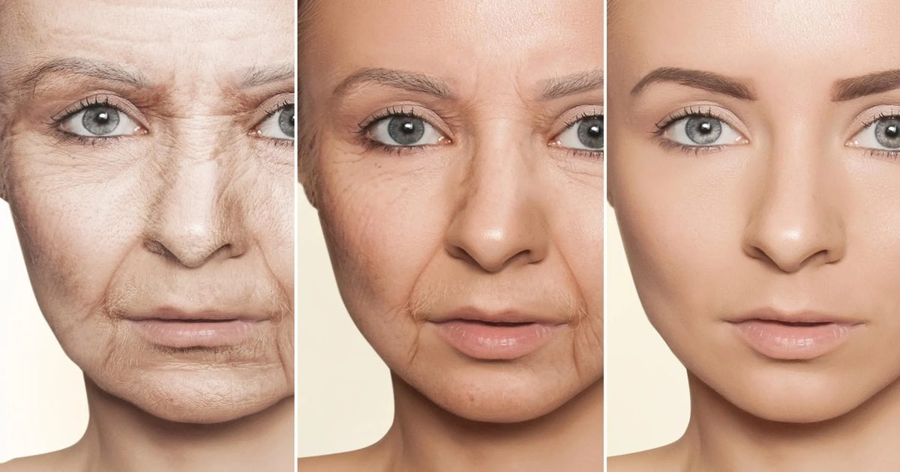

Ученые нашли 10 различных диет, связанных с замедлением старения
Исследование, проведенное DZNE, показало, что здоровое питание связано с более медленным биологическим старением, и что существует более одного способа здорового питания.
Исследователи изучили десять диетических моделей, считающихся здоровыми, включая средиземноморскую, скандинавскую и растительную диету, а также диету DASH, которая призвана помочь снизить кровяное давление.
Результаты исследования опубликованы в журнале Nature Communications.